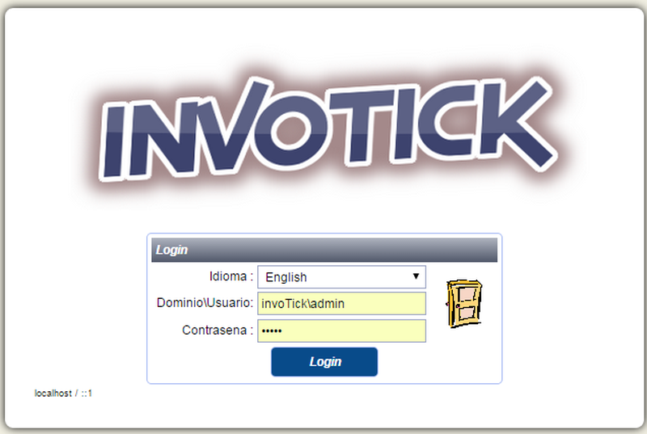
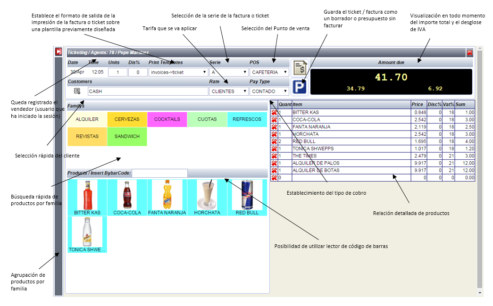

|
|
Instalación
Acceso
Parametrización
Inicial
Ventas
Crédito
Clientes
Plantillas de Ticket y facturas |
| Instalación |
|
| En Windows: |
En Linux (Ubuntu): |
Requerimientos: IIS, PHP,
PDO Sqlite
Instalar IIS y PHP, activar PDO Sqlite.
Descomprimir el contenido de invoTick.zip en una carpeta
del servidor Web, por ejemplo; c:\inetpub\wwwroot\itick.
Establecer permisos de lectura/escritura en la carpeta
itick\invoTick\db\domains para todos los archivos del usuario
IIS_IUSRS.
Ya puede acceder con el navegador
http://localhost/itick/invoTick/index.php |
Requerimientos: Apache, PHP, PDO Sqlite
Ejemplo de
instalación;
- sudo apt-get install apache2 php5 libapache2-mod-php5
php5-sqlite
- sudo /etc/init.d/apache2 restart
Descomprimir el contenido de invoTick.zip en una carpeta
del servidor Web, por ejemplo; /var/www/html/itick.
Establecer permisos de lectura/escritura en la carpeta
/invoTick/db para todos los archivos del usuario;
chown -R www-data:www-data /var/www/html/itick/db
chmod -R 660 /var/www/html/itick/db
Ya puede acceder con el navegador
http://localhost/itick/invoTick/index.php |
|
|
| Acceso |
|
| Login: |
panel de Administración: |
Por defecto el usuario es
invoTick\admin, password admin se debe establecer el nombre
del dominio (indica la base de datos que se utilizara),
para validar el usuario y proporcionar el acceso.
Por defecto el idioma corresponde al predeterminado
del navegador, pudiendo cambiar la opción del desplegable. |
En el panel de Administración
puede crear nuevos dominos (bases de datos), el acceso por
defecto sobre el nuevo dominio creado en base a una plantilla
es admin, lo que se recomineda cambiarlo despues del primer
acceso...
para acceder al panel de control utilice
el usuario admin, password admin. |
|
 |
|
|
|
| Parametrización Inicial
|
|
| En Tablas del Sistema -> Configuración: |
| 1) Defina los datos de facturación
para la empresa. |
|
2) Estableza los parametros
del servidor smtp para el envio de correos.
3) Seleccione
los modelos de ticket y factura que desea que aparezcan
por defecto en el modulo de facturación rapido.
4) Seleccione
el modo en el que quiere establecer el precio de los articulos
y servicios;
- IVA aplicado; en la factura de venta al
precio del articulo se le suma el IVA.
- IVA desglosado;
en la factura de venta el precio del articulo se da con
el IVA incluido y es desglosado posteriormente su importe
en el pie de la factura.
5) Establezca el porcentaje
de los impuestos que se aplicaran a alos articulos
6)
Establezca las diferentes tarifas/precios que se podran
definir posteriormente por cada producto.
7) Establezca
los tipos de cobro que aceptara.
8) Cargue las imagenes
que utilizara la aplicación |
|
|
|
| Configuración de
las Impresoras |
|
| En Tablas del Sistema -> Configuración
-> Printers: |
WINDOWS / LINUX:
Puede
utilizar el sistema nativo de impresoras. |
|
ANDROID:
Sin sistema
nativo de impresoras, puede utlizar la configuración de
impresoras en red (solo protocolo TCP/IP puerto 9100).
Para ello debe definir las impresoras, estableciendo la
Ip publica, debera mapear el puerto 9100 del router a la
Ip de su impresora local.
O alternativamente puede tambien
utilizar impresoras en CLOUD. |
|
|
|
| Ventas |
|
| Productos |
Defina previamentete las
familias a los articulos, los articulos se agrupan por familias
y es imprescindible asignarles una familia para utilizar
la facturación rapida.
Cuando defina un producto, le
debe asignar la familia a la cual pertenece y establecer
un precio asociado a una tarifa, puede establecer tantos
precios como tarifas tenga declaradas.
|
|
 |
|
|
| Credito Clientes |
|
| En Tablas del Sistema -> Clientes: |
| Para Clubs o Sociedades
es posible establecer una linea de credito a los Clientes
para la facturación periodica junto con la cuota. |
|
Puede declarar tantos puntos
de venta como sea necesario, asociando el login del usuario
a cada uno de ellos.
Los clientes pueden estar registrados
tanto de forma individual como agrupados por familias o
empresas con una dirección social y de facturación común.
Puede establecer indefinidas cuotas con periodos iguales
o distintos por diferentes conceptos.
En los periodos
establecidos debe confirmar la generación de todas las facturas
de forma automatica, junto con las del credito acumulado
si lo hubiera. |
|
| 1) Defina una o varias Tarifas que vaya
a aplicar |
|
|
|
|
| 2) Defina una familia especifica para
las cuotas |
|
|
|
|
| 3) Defina el producto y asignele precios
a las tarifas que le va a aplicar. |
|
|
|
|
| 4) Finalmente defina el Cliente y asignele
las cuotas que correspondan. |
|
|
|
|
|
|
| |
|
|
|
| |
| |